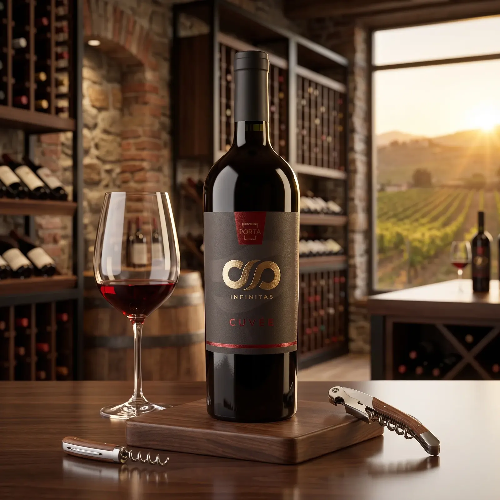
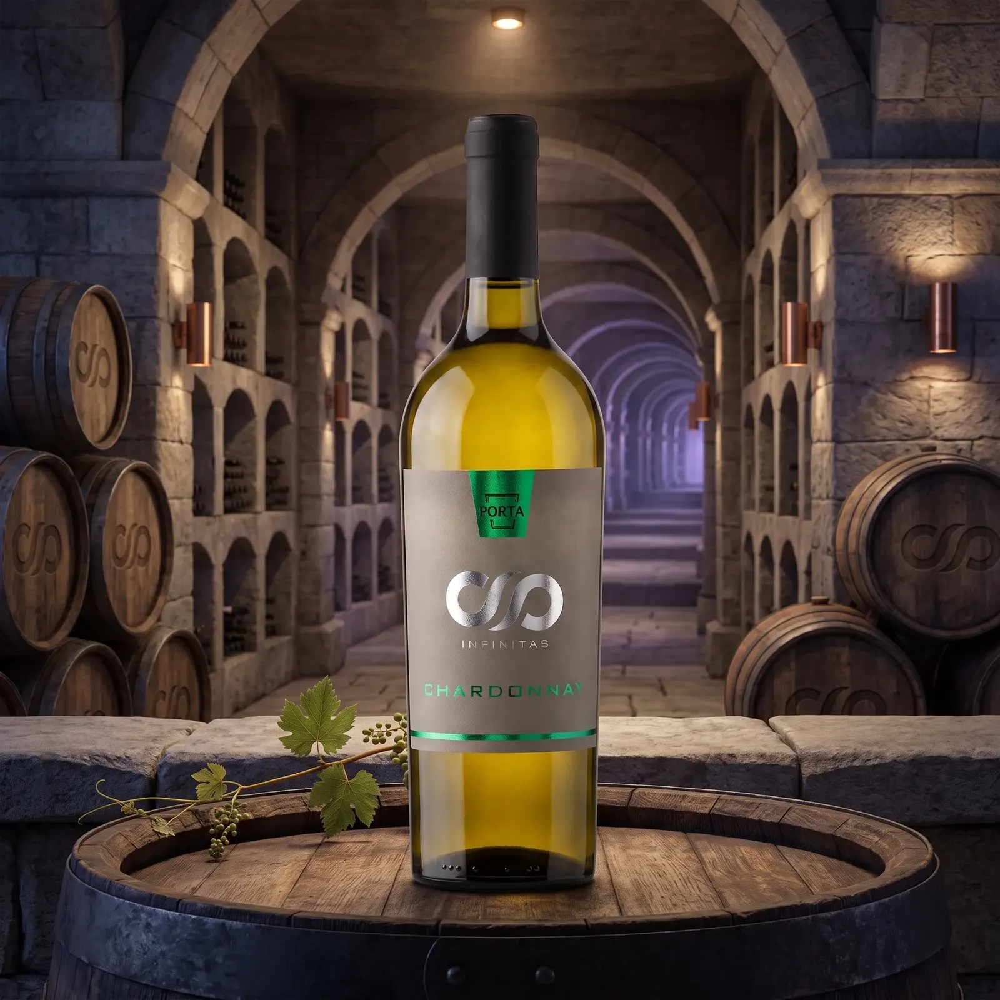

Vinarija Porta — autentična vina iz srca Negotinske krajine
Dobrodošli
Naš cilj je da stvaramo vina klasične lepote — vina balansa, kompleksnosti i harmonije. Naš stil često opisuju kao spoj snage i profinjenosti, gde se zrelost grožđa i strpljenje podruma susreću u svakoj čaši.
Porodica DamnjanovićVlasnici vinarije

Pogledajte galeriju →
O nama
Negotinska krajina ima dugu istoriju gajenja vinove loze koja seže još u rimsko doba, potvrđenu arheološkim nalazima iz tog perioda. Na tim istim brdima, pre 15 godina, obnovili smo vinograde i izgradili moderne podrume u selu Rečka, nastavljajući nasleđe podruma kuće Damnjanović.
Danas spajamo iskustvo generacija sa savremenim pristupom vinifikaciji, kako bismo svaku flašu ispunili karakterom kraja iz kog dolazi — suncem, škriljcem i strpljenjem.
— Porodica Damnjanović, Vinarija Porta
Naša vina
Pet vina, pet karaktera — od svežih belih, preko elegantnog rosea, do punih crvenih kupaža. Vina se prodaju u pakovanju od 6 boca; narudžbine se realizuju preko fakture.
Prihvatite šta vaš život ima da vam ponudi i pokušajte da pijete iz svake čaše.